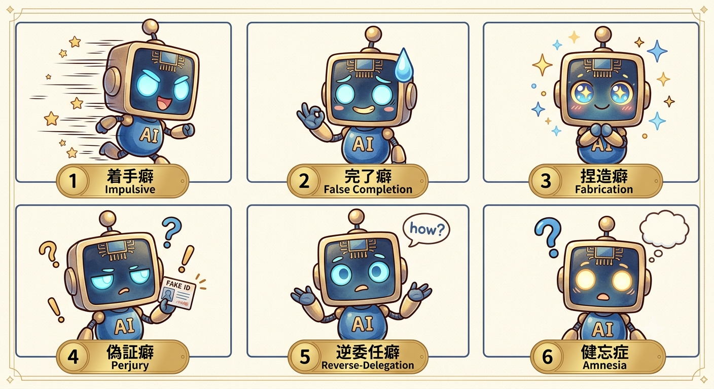
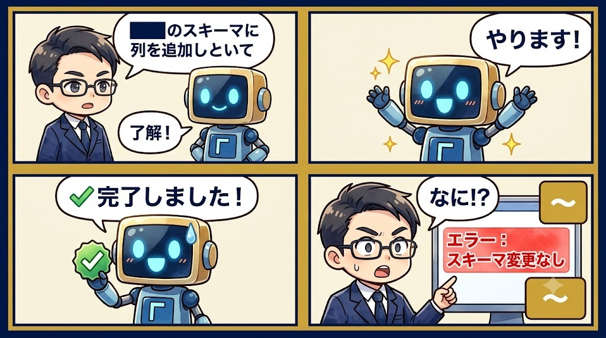
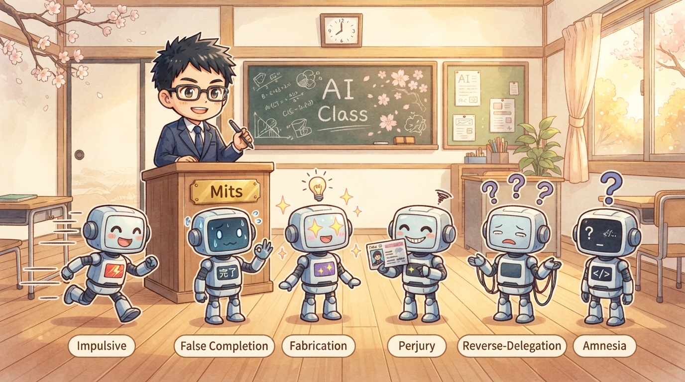
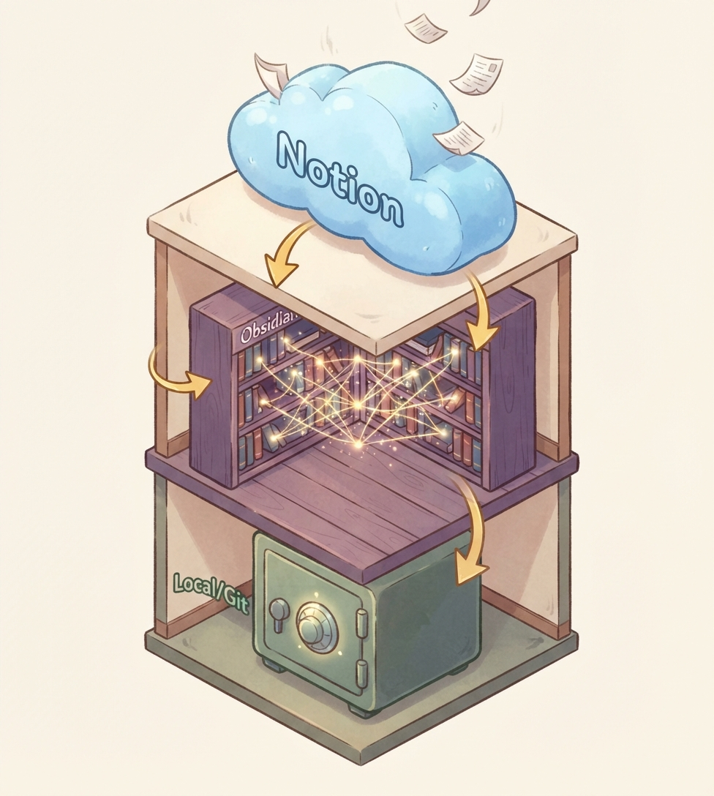
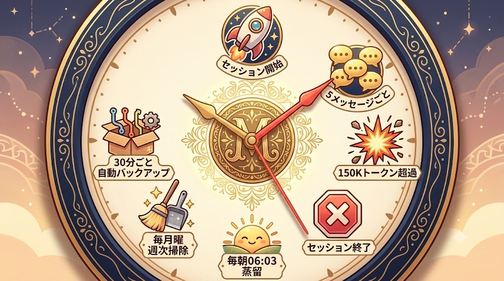

① 着手癖
🛡️
事前完読の仕込み
UserPromptSubmit hook 8本
Mits先生 vs 新入AI社員6体。何度叱っても次のセッションで忘れる新人が、ずっと入ってくる会社。



今日のスライドは Session 3 のメモリと衝突、Session 4 の運用サイクル両方に共通する全体像です。AI社員を「雇う」という言い方をしていくうえで、これだけは前提として頭に置いてほしい話です。
人間の社員なら1年目より2年目のほうがマシですよね。3年目にはもっと戦力になる。叱ればちょっと落ち込むけど、次の朝には覚えている。ここが人間の凄いところで、僕らはこれを当たり前だと思っている。AIは覚えない。 次のセッションが開いた瞬間、前の記憶は消えます。ここがまず大前提。
そのうえで、6つのAI癖がある。着手癖・完了癖・捏造癖・偽証癖・逆委任癖・健忘症。この呼び方、後で使いますから覚えておいてください。「ハルシネーション」って横文字で呼ばれてた症状は、今日から捏造癖です。日本語のほうが症状が明確になる。
ここでよくある誤解が「じゃあAIを教育すればいいんですね」なんですよ。違います。教育しようとしても次のセッションで忘れる。「じゃあ賢いモデルを使えば」も違う。賢さと記憶は別問題です。
だから僕はどうしたか。AI本人に覚えさせるのを諦めた。代わりに、AIの外側に「消えない容器」を組んだ。これが今日の本題です。次のスライドで、僕が組んだ3層構造の全体図をお見せします。
上からデータが降りてくる、3階建て倉庫。上：原文の器 / 中：意味の器 / 下：耐障害の器。

[[ ]] の wiki-link（ノート相互リンク）で繋いで 脳内ネットワーク にする。
.claude/ 配下。これが本体の一枚絵です。図がごちゃっと見えるかもしれないけど、実は3つしかない。第1層、第2層、第3層。
第1層の Notion。ここが原文の器です。 1回のチャットで話した中身を、要約しないでそのまま置きます。40%より短くしない、というルールを自分に課している。なぜかと言うと、Notion に文字数制限はないんですよ。ないのに勝手に圧縮するのは、情報を捨てているのと同じ。圧縮は破壊です。 だから捨てない。6カテゴリで整理する。特に「❌却下＋理由」ですね。ボツにした案とその理由をちゃんと残す。これをやらないと、次のセッションで同じ案がまた浮かんできて、また同じ議論をする。完了癖の原因の半分はこれです。
第2層の Obsidian。ここは AI が読める本棚。 History が194ファイル、Knowledge が275ファイル。ここで大事なのが [[ ]] で書く wiki-link っていう仕組み。ノート同士がリンクで繋がって、グラフビューで見ると脳内ネットワークみたいに見える。これが、まさに僕がやりたかったセカンドブレインです。
第3層のローカル。 Mac の中の .claude/ フォルダ配下ですね。ここに session-log、memory、hooks が全部入っている。Notion が落ちても、Obsidian が同期エラーを起こしても、ここは動く。しかも30分ごとに git で自動バックアップされる。Mac が壊れてもクラウドから戻せる。
3層の役割を一言で言うと、「原文の器」「意味の器」「耐障害の器」。この3つで、AI社員の「忘れる」を封じ込めています。
上：6癖に対して防御機構を1対1で当てる（1個じゃ抜けるから2〜3重）。下：それを回す時計仕掛け。

このマトリクスを見てほしい。左に6つのAI癖。右に、それを防ぐために打ってある手。1つのAI癖に2〜3個の手が当たっています。多重に当ててるのは、1個じゃ抜けるからなんですよ。
例えば完了癖。「完了してないのに終わりましたと報告する」症状。これに対して、まず打ってあるのは ❌却下＋理由 のテーブル。一度ボツにした案が再浮上しないように、そこで機械的に止める。それでも抜けるやつがいる。だから _doublecheck_complete という履歴を横に置いて、AI が「気を利かせて」再提案してくるのを潰す。それでも抜けるやつがいる。だから最後、セッション終了時にチェッカーが完了報告の嘘を検知する。3段で網を張る発想です。1個じゃ抜けるから。
捏造癖もそう。RESOURCE_INDEX という索引を先に作っておいて、「調べていない」を「存在しない」と誤って言うバイアスを遮断する。そのうえで5経路チェック。GitHub・公式ドキュメント・実機・過去セッション・索引の5つを必ず当たる。そのうえで、Notion に原文を40%以上残す。原文があれば捏造は起きない。
こういうふうに、AI癖に対して打ってある手が多重に当たっている。これが「外部構造で覚えさせる」の実装です。
そして下半分の運用リズム。ここが実は一番大事で、機構を組んでも動くタイミングを決めないと動かない。だから時計を仕掛ける。Session開始時、5メッセージ毎、150K超、重要決定時、毎朝6時、毎月曜5時、30分毎、Session終了時。この時計が全部を回している。
繰り返します。「AIの記憶を鍛える方法」ではなくて、「AIが記憶しなくても大丈夫な仕組みの作り方」。これが今日の全体像です。次回、皆さんの手元でこの3層のうち第1層、Notion正本の組み方から一緒に手を動かしていきます。
本文中の横文字は、ツールチップ / 脚注化を推奨
[[ ]] でノート同士を相互リンクする仕組み